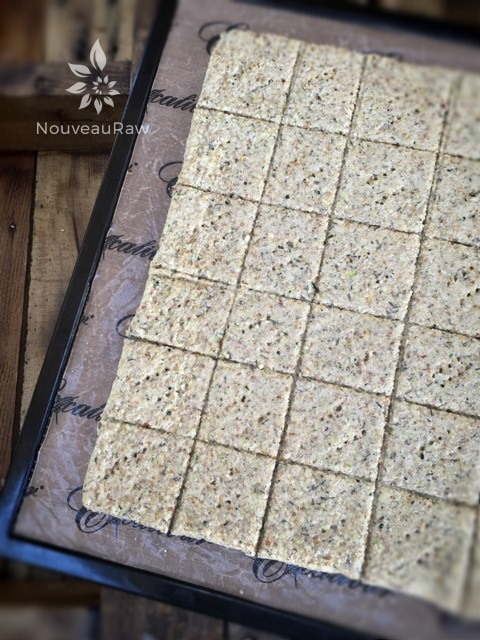
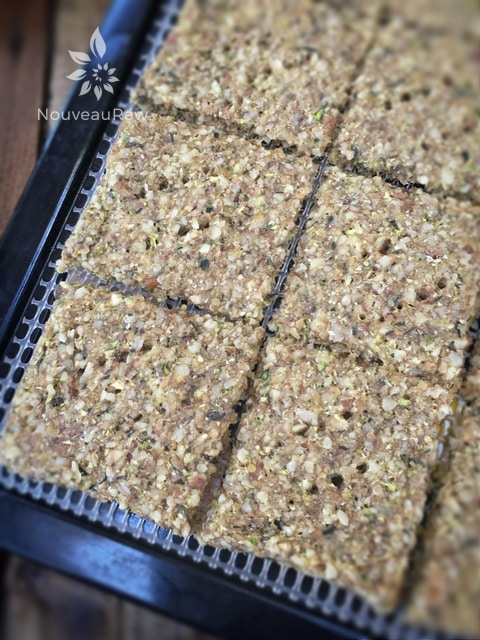

Walnut and Thyme Crackers

~ raw, vegan, gluten-free ~
Simple, classic, and melt-in-your-mouth delicious crackers. That is what I am sharing with you today. They are perfect to serve on a raw cheese plate with grapes for an appetizer. These herb-infused crackers offer up a buttery flavor thanks to the walnuts.
This recipe presented me with a wonderful opportunity to use up some fresh thyme that had been hanging out in my fridge. This is my first year growing fresh herbs on my back porch and I can’t wait for them to become flush with goodness. Walking out into the fresh air to pinch off some fresh herbs as I needed…. makes me feel so… earthy… so connected to my food.
Do you have some spare time Thyme?
If so, give this recipe a try! Thyme (pronounced “time”) is a fragrant, small-leafed, woody-stemmed culinary herb that is used frequently in the Mediterranean, Italian and French cuisines.
Because of their tough, woody stems, the sprigs should be removed before serving. The tiny leaves are easily removed from the stems by pulling the stems through your fingers from top to bottom, against the direction of the stems. Six average sprigs will yield about a tablespoon of leaves.
They can be given a quick chop or simply added to the recipe, whole. The leaves may also be lightly crushed before adding them, which releases the volatile, flavorful oils. Fresh thyme should be kept refrigerated, where it will keep for about a week. It can also be frozen on a baking sheet and then stored in zipper baggies in the freezer for up to six months. In its dried form, thyme will keep for about six months in an airtight container in a cool, dry place. Thyme retains much of its flavor when dried.
Although the thought of making crackers can be a little intimidating, this recipe is surprisingly simple and straightforward. I hope you enjoy these buttery seasoned crackers. They were a hit in our home. Blessings, amie sue
Yields 50-60 (2 x 2″) crackers
Preparation:
- Put the walnuts, pecans, ground flax, salt, and pepper in the food processor and pulse until the nuts are finely ground. Place in a large bowl and set aside.
- Place the zucchini, water, and thyme in the food processor and process until the zucchini is broken down.
- To peel or not to peel…that is the question! You can peel the zucchini or leave the skin on, that is up to you. Should you decide to leave the skin on, make sure that you use ORGANIC zucchini! The skin does hold nutrients.
- If you don’t buy organic, I recommend that you peel the zucchini to remove as much of the pesticides as you can, not to mention the wax that they use to shine them up.
- Also, if you are looking for a neutral colored cracker, peel it. Otherwise, leave the peel and enjoy the green speckles throughout.
- Spread 1/2 of the batter onto the teflex (non-stick) sheet that comes with the dehydrator.
- Score the crackers into the desired size.
- You can use a knife (be careful that you don’t press too hard and cut the teflex sheet) or you can use a pizza cutter.
- I like to use his six wheel pastry cutter, which can be found (here).
- Sprinkle the top with coarse sea salt.
- Dehydrate at 145 degrees (F) for 1 hour, then reduce to 115 degrees (F) for approximately 12 hours.
- Once dry enough (around the 4-6 hour marker), remove the teflex sheet, leaving the crackers on the mesh sheet, continue drying until desired dryness is reached.
- Store them in a tightly sealed container for several weeks.
Culinary Explanations:
- Why do I start the dehydrator at 145 degrees (F)? Click (here) to learn the reason behind this.
- When working with fresh ingredients it is important to taste test as you build a recipe. Learn why (here).
- Don’t own a dehydrator? Learn how to use your oven (here). I do however truly believe that it is a worthwhile investment. Click (here) to learn what I use.

The batter has been spread and scored… ready for the dehydrator. Below, they just came out. The magic of blogging. hehe

© AmieSue.com